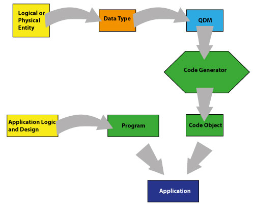

About the QDM
The Qeo Data Model is an XML-based representation of a logical or physical entity used when talking Qeo. It presents a programming-language-independent way of representing a data structure. Using a Code Generator, this QDM can be translated into language-specific data descriptions. Currently, the SDK contains a translator for all currently supported development languages.
Basic Concepts
In order to understand the function, content and structure of a QDM, you need an understanding of Qeo concepts and principles. Before proceeding with this document, it is therefore necessary that you read the Qeo System Description first. Below is a quick recap:
Topic: a piece of information that is exchanged over Qeo. A topic has an associated Data Type. In a topic, only objects of that type are published. A topic represents multiple instances of that Data Type.
Reader: A Qeo entity that reads a topic. Readers typically subscribe to certain topics in which they are interested.
Writer: A Qeo entity that writes information to a topic. The information is broadcast over Qeo. Any interested reader can subscribe to the topic.
Properties: Topics have certain properties (comparable to parameters of an object). They are represented by fields in the Data Type.
Behavior: Topics can also exhibit behavior. In Qeo, two different types of behavior exist:
State topic: represents a topic that holds certain values over a "longer" period of time. State topics use the value of key fields in order to distinguish the different instances of the topic.
Event topic: represents a discrete, transitory event. The important factor in an event topic is its occurrence, not the values or fields associated with it. Event topics have no key fields.
Versioning
A QDM has a version such it can be identified unambiguously. The version is mentioned in the version attribute of the types XML element. As long as your data model updates are compatible, you can keep on using the same QDM and update the version. Although the version is a string type, following guidelines apply to the “version” :
- A draft version is indicated by an "integer.integer" format
- Example : version = “0.1”, “0.2”, etc. These are drafts towards official version “1”
- An official version is indicated by an integer format
- Example : version = “1”
- A draft vendor extension is indicated by an "integer.string.integer.integer" format :
- Example : version = “1.samsung.0.1”, “1.samsung.0.2”, etc. This indicates a sideway QDM evolution from version “1” in the org.qeo namespace. These versions are drafts towards official version “1.samsung.1”
- A official vendor extension is indicated by an "integer.string.integer" format :
- Example : version = “1.samsung.1”. This indicates an official version being a sideway QDM evolution from version “1” in the org.qeo namespace.
When a vendor comes up with his own QDM from scratch, not being a sideway evolution from a Qeo QDM, he needs to define the QDM in his specific namespace, e.g. “org::samsung” .
If you make a data model update that is not compatible anymore with the last version, you need to define a new QDM with a new module name.
Supported Data Types in Qeo
Fields in a data type can be of different types. The following types are supported in Qeo:
Basic Types:
"string": string
- "boolean": boolean
- "byte": byte
- "int16": signed int (16 bit)
- "int32": signed int (32 bit)
- "int64": signed int (64 bit)
- "float32": float (32-bit)
Non-Basic Types:
struct (i.e., another data type)
- enums (see below)
Sequence:
sequence (= variable-length array) of any other supported type (except for a sequence of sequences. This is not possible in the current release.)
Using Enums
Enums or enumeration types are supported from release 0.19.0 onwards. Below is an example of a QDM that includes an enumeration type, as used in the QSimpleChat Apps:
<?xml version="1.0" encoding="UTF-8"?>
<types xmlns="http://www.qeo.org/formal/2013/Qeo_Data_Model" version="0.1">
<module name="org::qeo::sample::simplechat">
<enum name="ChatState">
<doc>Possible chat participant states.</doc>
<enumerator name="AVAILABLE">
<doc>The user is available for chatting.</doc>
</enumerator>
<enumerator name="IDLE">
<doc>The user is idle.</doc>
</enumerator>
<enumerator name="BUSY">
<doc>The user is busy and will not respond to messages.</doc>
</enumerator>
<enumerator name="AWAY">
<doc>The user is unavailable.</doc>
</enumerator>
</enum>
<struct name="ChatParticipant" behavior="state">
<doc>A participant in a chat session.</doc>
<member name="name" type="string" key="true">
<doc>The name of the participant.</doc>
</member>
<member name="state" type="nonBasic" nonBasicTypeName="ChatState">
<doc>The state of the participant.</doc>
</member>
</struct>
</module>
</types>
In this case, the enumerator is used to define the state of a party in a chat session.
A QDM's Place in the Developer's World
No matter which development language or platform you are using, developing the right topics and data types is an important and time-consuming part of the development process. In order to increase development efficiency, we can
- Re-use data types we developed before.
- Use standardized data types.
- Re-use data types made available by other developers.
However, representing Data Types in a language-specific or platform-specific form poses an impediment for developers using a different platform, or for the same developer when developing on multiple platforms. In order to overcome this impediment, Data Types can be presented in a language-independent and standardized form. This is essentially what a Qeo Data Model does. Code generators can automatically translate the QDM representation of the data type to a representation in the language you are using for your development. Currently, Java and C translation are supported. In later releases, other common development languages will be supported.
The diagram below shows the place of the QDM in the development process:

A developer designs a number of logical or physical entities as well as an application logic that defines the interaction between these entities. The entities are represented by Data Types which are represented as Qeo Data Models. He develops a program that implements the logic in a specific language and uses a Code Translator to turn the QDMs into Code objects. The program code and objects are compiled into an application.
Example : The Media Endpoint
Consider the following Topic: a so-called Media Endpoint, i.e. a producer or consumer of media files. This Topic has the following properties:
| Property | Description | Type |
|---|---|---|
| ID | Unique ID of the media endpoint | String |
| type | describes whether the endpoint is a producer or consumer of media | String equal to "SOURCE" or "SINK" |
| capabilities | Describes the supported media types, codecs and transports | String (MIME) |
| deviceId | Device identity representing the Qeo device | DeviceId (standard Qeo ID format) |
The diagram below shows the structure of this Topic:

Media Endpoint QDM
Below is the QDM Description for this Topic:
<types xmlns="http://www.qeo.org/formal/2013/Qeo_Data_Model" version="0.1">
<include file="qeo_types.xml"/>
<module name="org::qeo::media">
<struct name="Endpoint" behavior="state">
<member name="id" type="string" key="true">
</member>
<member name="type" type="string">
</member>
<member name="capabilities" type="string">
</member>
<member name="deviceId" type="nonBasic" nonBasicTypeName="org::qeo::DeviceId">
</member>
</struct>
</module>
</types>
For more information about the contents and structure of this QDM, refer to Structure of a QDM. To learn how this QDM was built, read the Tutorial: Creating the MediaEndPoint QDM.
More Examples
The QDMs of the sample applications are delivered with the SDK. They are located in the qdms>qdm>samples subfolder.
{kind=link}
{kind=link}